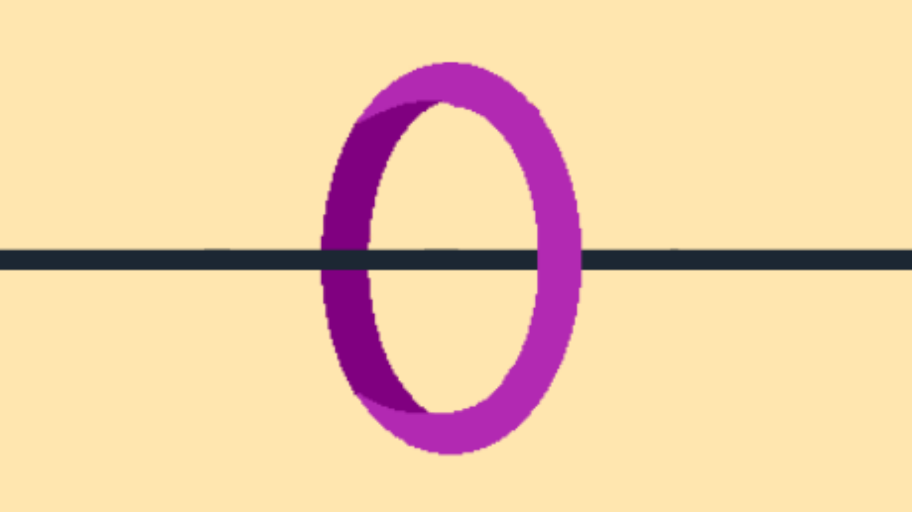
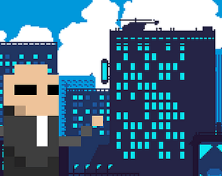

Projects
What I've built
Pixel Fall
Unity · C# · WebGL
Avoid airplanes and birds. Collect gold coins. With this gold you can buy new characters on the market.

Reflex Master
Unity · C# · WebGL
Press the arrow directions as fast as possible before time runs out and test your reflexes.

Paint Futbol
Unity · C# · Mobile
Developed for Goal Up
Pick your teams and let the simulation do the rest! Download now to join in the excitement right up to the final whistle. Whether you want to create your own league or have fun with prediction competitions with your friends!

Stickman Hook Clone
Unity · C# · WebGL
A prototype in which I have cloned the mechanics of the game 'Stickman Hook'.


Jhoony Trigger Clone
Unity · C#
A prototype recreating the core mechanics of 'Jhoony Trigger'.

The Final Glow
Unity · C#
Just when all hope of survival has faded, things take a turn with the crescent moon, which offers us one last glimmer of hope. Or are we so utterly spent that even the crescent moon cannot help us?


Serializer ScriptableObject
Unity Editor · C#
Working with ScriptableObjects often requires constantly opening assets just to tweak values. This tool removes that friction.

World Layout Group
Unity Editor · C#
WorldLayoutGroup is a lightweight, editor-only layout component for Unity. It automatically arranges child GameObjects in the scene, similar to Unity's UI LayoutGroup, but designed for world (non-UI) objects.
Sprite Slicer Editor
Unity Editor · C#
Sprite Slicer is an Editor tool developed for Unity. Automatically slices one or more sprites of the same width and height.